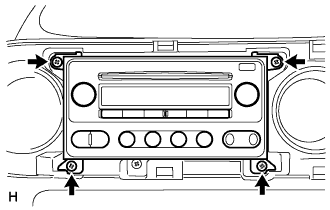
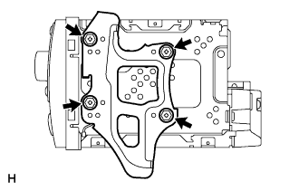
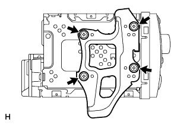

シフトレバーを下げ、ステアリングをチルトダウンする。
 |
インストルメントクラスタフイニツシユパネル CTRを車両後方に引き、ツメ12箇所のかん合をはずし、インストルメントクラスタフイニツシユパネル CTRを取りはずす。
- □ 参 考 □
- インストルメントクラスタ フィニッシュパネル CTR下部のサービスホール部から取りはずす。
ラジオレシーバASSY 取り外し |
| 1. インストルメントクラスタフィニッシュ パネルSUB-ASSY CTR取りはずし |
シフトレバーを下げ、ステアリングをチルトダウンする。
|
インストルメントクラスタフイニツシユパネル CTRを車両後方に引き、ツメ12箇所のかん合をはずし、インストルメントクラスタフイニツシユパネル CTRを取りはずす。
| 2. ラジオレシーバASSY W/ブラケット取りはずし |
|  |
スクリュー4本を取りはずす。
各コネクターを切り離し、ラジオレシーバASSY W/ブラケットを取りはずす。
| 3. ラジオ ブラケット NO.1取りはずし |
|  |
ボルト4本をはずし、ラジオブラケットNo.1を取りはずす。
| 4. ラジオ ブラケット NO.2取りはずし |
|  |
ボルト4本をはずし、ラジオブラケットNo.2を取りはずす。
| 5. ラジオ レシーバASSY取りはずし |